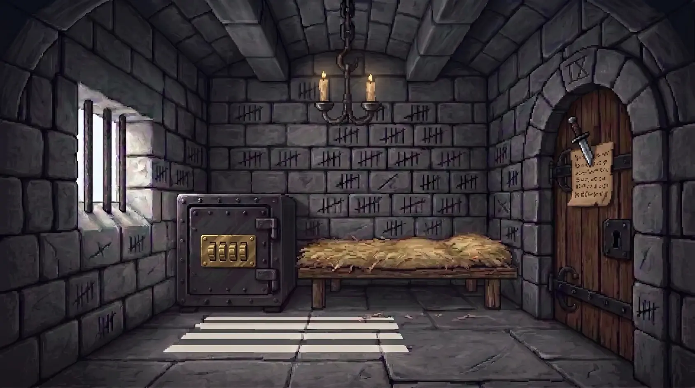
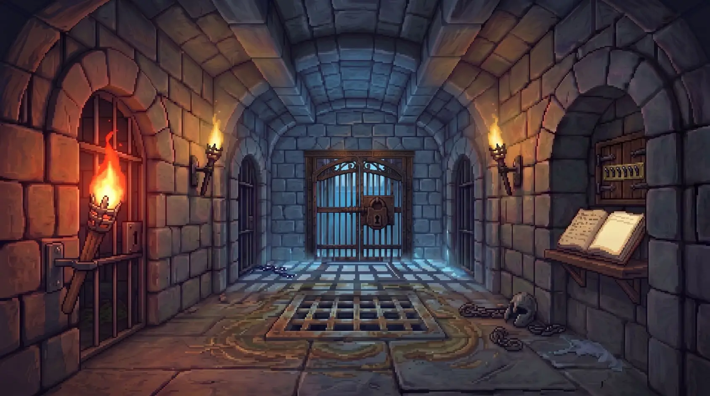
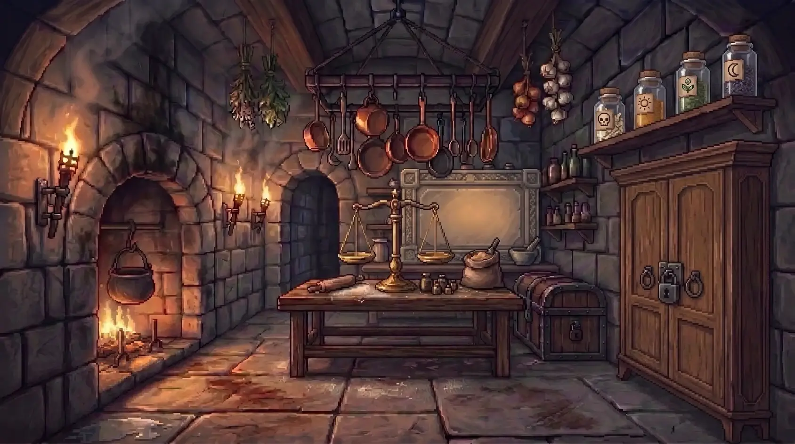
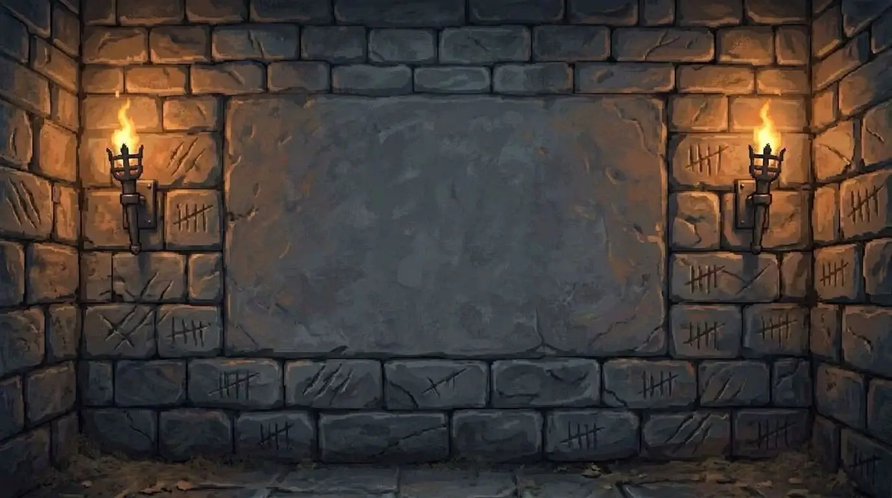

Puzzle adventure · iPhone · iPad
Escape before dawn.
You wake in a cell with no memory and a message scratched into the stone. Room by room, work the locks open, piece together who you are — and who betrayed you.
- Act I free
- No ads
- No timers
- Plays offline
Act I complete and free · Acts II and III in the works · Android coming
Trailer · tap to play, with sound
A castle that answers back
Hand-painted, torch-lit rooms where every clue is part of the room: tally marks on a wall, a scale with one hollow weight, a candle that shows what the stone hides.




What’s in Act I
Four rooms, five puzzles
The cell, the corridor, the pantry and the kitchens. Dials, levers, a balance and a candle, each with its own mechanism.
A nudge, not the answer
Light a candle stub when you’re stuck: the hint points the way without giving it away. They’re hidden in every room.
It remembers for you
What you see, what you read, what you recall about yourself. Your Wit grows with every puzzle and earns you ranks.
A two-screen handheld
Half-folded, it plays like a two-screen console: look up top, touch below.
Dawn is atmosphere, not a clock
Nothing ends your game because you took your time. When you finish the act, replay any puzzle.
Voiced and scored
A narrator in English and Spanish, an original score and the crackle of every torch.
Free, and what comes next
Act I is complete and free: no ads, no subscription, no lives or energy, and nothing to buy inside the game today.
Acts II and III — the chapel, the crypt, the clock tower and the three endings — are in the works. When you finish Act I, the game lets you ask us to tell you when they land.
Your game stays on your device
Grismoor plays offline and needs no account: your progress is saved on your device only.
The game sends anonymous usage statistics (which room you reach, when a hint is used) so we can see where players get stuck; you can switch them off in Settings. If you ask to be told when Act II lands, the device sends a notification token for that one message. The details are in the privacy policy.